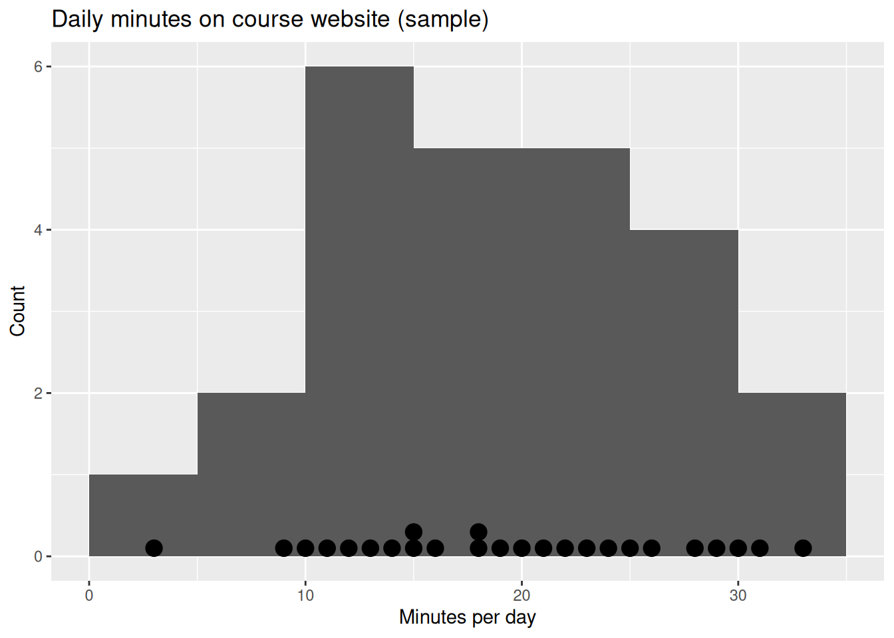
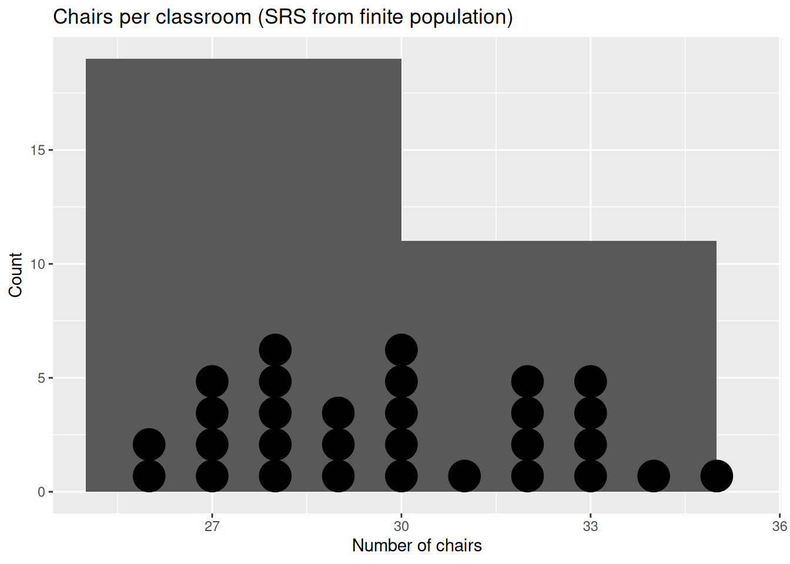
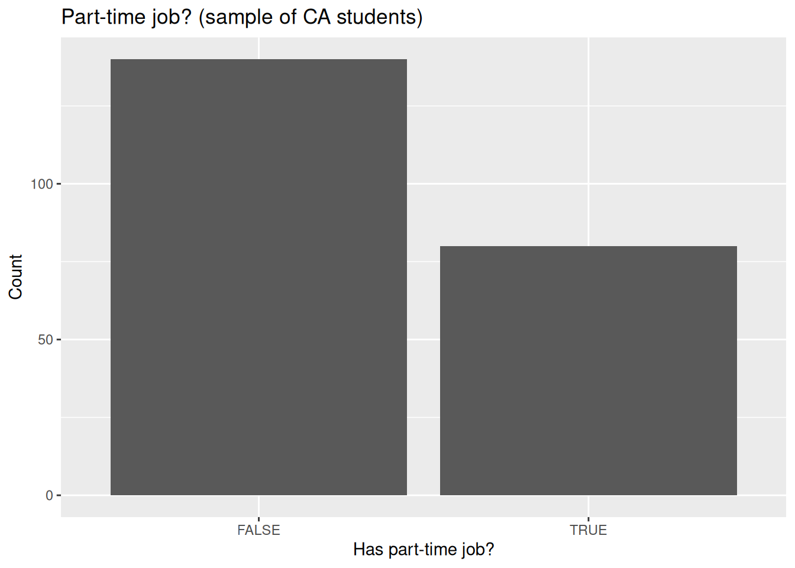
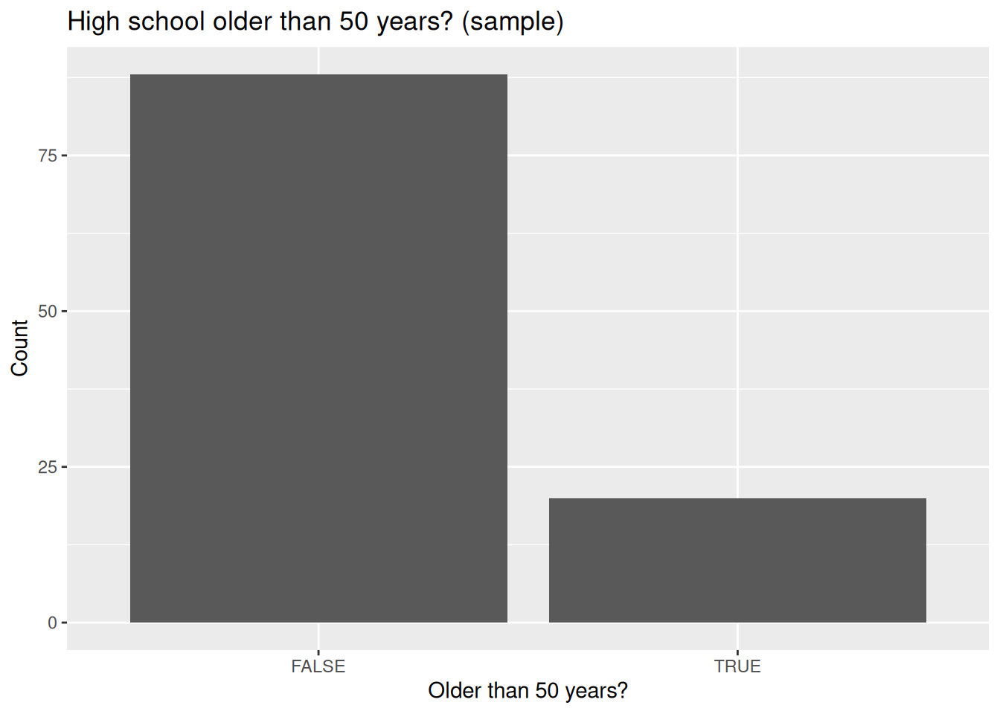
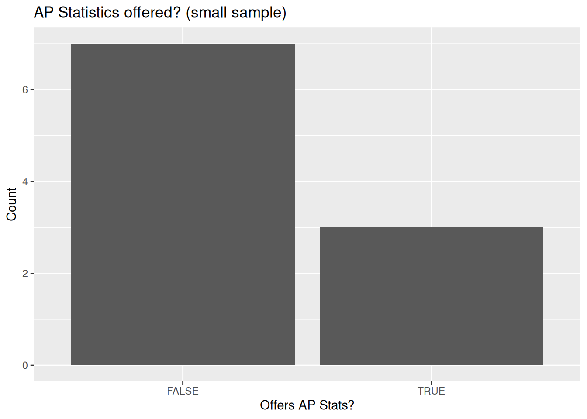

Code
# If needed:
# install.packages("ggplot2")
library(ggplot2)STAT 109: Introductory Biostatistics
Open in Colab — after it opens, use Runtime → Change runtime type and select R if needed.
You will see 5 word problems. For each problem, let’s
1. Identify the parameter (mean or proportion)
2. Decide whether the population is effectively infinite (no FPC) or finite (use FPC)
3. Compute the descriptive statistics (and make the requested plot)
4. Compute the 95% confidence interval with the appropriate method
Use a t-interval:
\[ \bar{x} \pm t^{*}_{df=n-1}\frac{s}{\sqrt{n}} \]
Conditions (typical intro stat version):
- SRS (or random sample), independent observations
- Data are roughly symmetric (normal) or n is moderately large (greater than 30)
Use a t-interval with finite population correction (SRS without replacement from a known finite list):
\[ \bar{x} \pm t^{*}_{df=n-1}\frac{s}{\sqrt{n}}\sqrt{\frac{N-n}{N-1}} \]
Conditions:
- SRS without replacement from a finite population of known size N
- Data are roughly symmetric (normal) or n is moderately large (greater than 30)
\[ \hat{p} \pm z^{*} \sqrt{\frac{\hat{p}(1-\hat{p})}{n}} \]
Conditions: - SRS (or random sample), independent - Large counts: \(n\hat{p} \ge 10\) and \(n(1-\hat{p})\ge 10\)
\[ \hat{p} \pm z^{*} \sqrt{\frac{\hat{p}(1-\hat{p})}{n}} \sqrt{\frac{N-n}{N-1}} \]
Conditions: - SRS without replacement from a finite population of known size N - Large counts: \(n\hat{p} \ge 10\) and \(n(1-\hat{p})\ge 10\)
If \(n\hat{p} < 10\) or \(n(1-\hat{p}) < 10\), prefer an exact binomial CI (Clopper–Pearson): - In R: binom.test(x, n) then .$conf.int Conditions: - Fixed n, independent binary trials with common success probability (binomial model) - (If sampling without replacement from a finite population and n/N is small, binomial is a reasonable approximation.)
# If needed:
# install.packages("ggplot2")
library(ggplot2)A college instructor wants to estimate the mean number of minutes per day that students in an intro stats course spend on the course website. A random sample of n = 25 students was taken, and their times (minutes) were collected.
Tasks (student version): - Decide which interval formula to use
- Compute the sample mean and SD
- Make a histogram with stacked dots (like in the sample project)
- Compute a 95% CI for the mean
x <- c(12, 18, 25, 9, 31, 16, 20, 22, 14, 3, 19, 11, 24, 30, 15, 15, 21, 26, 13, 28, 10, 23, 29, 18, 33)
mean(x)[1] 19.4sd(x)[1] 7.72442ggplot(data.frame(x=x), aes(x=x)) +
geom_histogram(binwidth = 5, boundary = 0) +
geom_dotplot(binwidth = 1, stackdir = "up", dotsize = 0.75) +
labs(title="Daily minutes on course website (sample)",
x="Minutes per day", y="Count")
# 95% t-interval (no FPC)
mean(x) + c(-1,1)*qt(0.975, df=length(x)-1) * (sd(x)/sqrt(length(x)))[1] 16.21152 22.58848# no math equation method
t.test(x)
One Sample t-test
data: x
t = 12.558, df = 24, p-value = 4.853e-12
alternative hypothesis: true mean is not equal to 0
95 percent confidence interval:
16.21152 22.58848
sample estimates:
mean of x
19.4 A school district has a list of N = 300 high school classrooms. They want to estimate the mean number of chairs per classroom. A simple random sample (without replacement) of n = 30 classrooms was selected. The chair counts were counted.
Tasks (student version): - Decide which interval formula to use
- Compute mean and SD
- Make a histogram with stacked dots
- Compute a 95% CI for the mean with FPC
N <- 300
x <- c(28, 30, 32, 27, 27, 33, 33, 26, 30, 30, 28, 29, 35, 27, 32, 32, 28, 30, 29, 33, 26, 34, 28, 31, 30, 27, 32, 29, 33, 28)
mean(x)[1] 29.9sd(x)[1] 2.523681ggplot(data.frame(x=x), aes(x=x)) +
geom_histogram(binwidth = 5, boundary = 0) +
geom_dotplot(binwidth = 1, stackdir="up", dotsize=0.5) +
labs(title="Chairs per classroom (SRS from finite population)",
x="Number of chairs", y="Count")
# 95% t-interval WITH FPC
n <- length(x)
mean(x) + c(-1,1)*qt(0.975, df=n-1) * (sd(x)/sqrt(n)) * sqrt((N - n)/(N - 1))[1] 29.00451 30.79549A researcher wants to estimate the proportion of CA high school students who report having a part-time job. A random sample of n = 220 students was taken; x = 80 reported having a part-time job.
Tasks (student version): - Decide which interval formula to use
- Report: count (x), sample size (n), sample proportion (\(\hat{p}\))
- Make a bar plot of the sample data (Job = Yes/No)
- Compute a 95% CI for the proportion (normal approximation, no FPC)
n <- 220
x <- 80
# Create a sample vector to plot (86 TRUEs, 114 FALSEs)
job <- c(rep(TRUE, x), rep(FALSE, n - x))
sum(job) # x[1] 80length(job) # n[1] 220mean(job) # p-hat[1] 0.3636364ggplot(data.frame(job=job), aes(x=job)) +
geom_bar() +
labs(title="Part-time job? (sample of CA students)",
x="Has part-time job?", y="Count")
# 95% normal-approx CI for p (no FPC)
p_hat <- mean(job)
p_hat + c(-1,1)*qnorm(0.975)*sqrt(p_hat*(1-p_hat)/n)[1] 0.3000706 0.4272021# no math equation method
prop.test(x, n)
1-sample proportions test with continuity correction
data: x out of n, null probability 0.5
X-squared = 15.823, df = 1, p-value = 6.956e-05
alternative hypothesis: true p is not equal to 0.5
95 percent confidence interval:
0.3007651 0.4313538
sample estimates:
p
0.3636364 A state directory lists N = 1500 CA high schools. A simple random sample (without replacement) of n = 108 schools was selected. In the sample, x = 20 schools were more than 50 years old.
Tasks (student version): - Decide which interval formula to use
- Report (x), (n), \(\hat{p}\)
- Make a bar plot - Compute a 95% CI for the proportion with FPC
N <- 1500
n <- 108
x <- 20
old50 <- c(rep(TRUE, x), rep(FALSE, n - x))
sum(old50) # x[1] 20length(old50) # n[1] 108mean(old50) # p-hat[1] 0.1851852ggplot(data.frame(old50=old50), aes(x=old50)) +
geom_bar() +
labs(title="High school older than 50 years? (sample)",
x="Older than 50 years?", y="Count")
# 95% normal-approx CI for p WITH FPC
p_hat <- mean(old50)
p_hat + c(-1,1)*qnorm(0.975)*sqrt(p_hat*(1-p_hat)/n) * sqrt((N - n)/(N - 1))[1] 0.1145880 0.2557824A student wants to estimate the proportion of high schools that offer an AP Statistics course in a rural county. They randomly sampled n = 10 high schools from a list and found x = 3 offer AP Statistics.
Because this is a rare outcome with a small sample, the large-sample normal CI conditions fail (\(n\hat{p} < 10\) and/or \(n(1-\hat{p}) < 10\)). Use an exact binomial CI.
Tasks (student version): - Decide which interval method to use
- Report (x), (n), (\(\hat{p}\))
- Make a bar plot (APStats = TRUE/FALSE)
- Compute a 95% exact binomial CI in R
n <- 10
x <- 3
apstats <- c(rep(TRUE, x), rep(FALSE, n - x))
sum(apstats) # x[1] 3length(apstats) # n[1] 10mean(apstats) # p-hat[1] 0.3ggplot(data.frame(apstats=apstats), aes(x=apstats)) +
geom_bar() +
labs(title="AP Statistics offered? (small sample)",
x="Offers AP Stats?", y="Count")
# Check large-sample conditions:
mean(apstats)*n[1] 3(1-mean(apstats))*n[1] 7# Exact 95% CI (Clopper–Pearson)
binom.test(x, n)$conf.int[1] 0.06673951 0.65245285
attr(,"conf.level")
[1] 0.95survey packagePick either the mean subsection or the proportion subsection below—each is self-contained.
Idea: For a numeric outcome, svymean(~measurement, design) estimates the population mean. confint(...) gives a 95% interval with a t-style SE when the design is a simple random sample (same spirit as t.test).
Steps (minimal):
data.frame with one row per sampled unit and a column for the numeric measurement (e.g. minutes, chair count).svydesign(ids = ~1, data = ...) — ids = ~1 means “no clusters; each row is its own primary unit.”fpc = ~N in svydesign. Infinite population (Problem 1): omit fpc.confint(svymean(~measurement, design)) — interval for the population mean.This matches Problems 1–2 with less algebra in R.
library(survey)
# --- Problem 1 style (no FPC): same x as above ---
x <- c(12, 18, 25, 9, 31, 16, 20, 22, 14, 3, 19, 11, 24, 30, 15, 15, 21, 26, 13, 28, 10, 23, 29, 18, 33)
d1 <- data.frame(x = x)
w1 <- svydesign(ids = ~1, data = d1)
confint(svymean(~x, w1)) # matches the usual one-sample t interval 2.5 % 97.5 %
x 16.37208 22.42792# --- Problem 2 style (FPC): N = 300 classrooms, same x as above ---
N <- 300
x2 <- c(28, 30, 32, 27, 27, 33, 33, 26, 30, 30, 28, 29, 35, 27, 32, 32, 28, 30, 29, 33, 26, 34, 28, 31, 30, 27, 32, 29, 33, 28)
d2 <- data.frame(x = x2, N = N)
w2 <- svydesign(ids = ~1, data = d2, fpc = ~N)
confint(svymean(~x, w2)) 2.5 % 97.5 %
x 29.04327 30.75673Idea: For a Yes/No (or 0/1) outcome, svymean(~outcome, design) gives \(\hat{p}\). confint(...) uses a large-sample normal approximation for the proportion (same spirit as the Wald formulas in the quick guide).
Steps (minimal):
data.frame with one row per sampled unit and a column for the Yes/No (or 0/1) outcome.svydesign(ids = ~1, data = ...) — ids = ~1 means “no clusters; each row is its own primary unit.”fpc = ~N in svydesign. Infinite population (Problem 3): omit fpc.confint(svymean(~outcome, design)) — interval for the population proportion.This matches Problems 3–4 with less algebra in R.
library(survey)
# --- Problem 3 style (no FPC): n = 220, x = 80 with part-time job ---
job <- c(rep(TRUE, 80), rep(FALSE, 220 - 80))
d3 <- data.frame(job = job)
w3 <- svydesign(ids = ~1, data = d3)
confint(svymean(~job, w3)) 2.5 % 97.5 %
jobFALSE 0.5726529 0.7000743
jobTRUE 0.2999257 0.4273471# --- Problem 4 style (FPC): N = 1500, n = 108, x = 20 “>50 years” ---
d4 <- data.frame(
old50 = c(rep(TRUE, 20), rep(FALSE, 108 - 20)),
N = 1500
)
w4 <- svydesign(ids = ~1, data = d4, fpc = ~N)
confint(svymean(~old50, w4)) 2.5 % 97.5 %
old50FALSE 0.7439121 0.8857175
old50TRUE 0.1142825 0.2560879